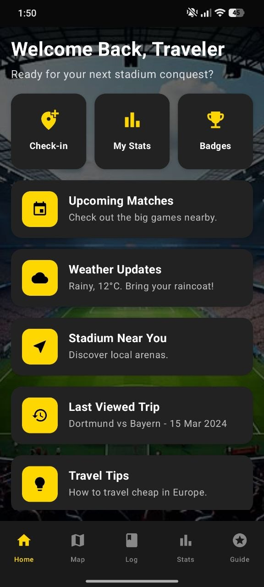
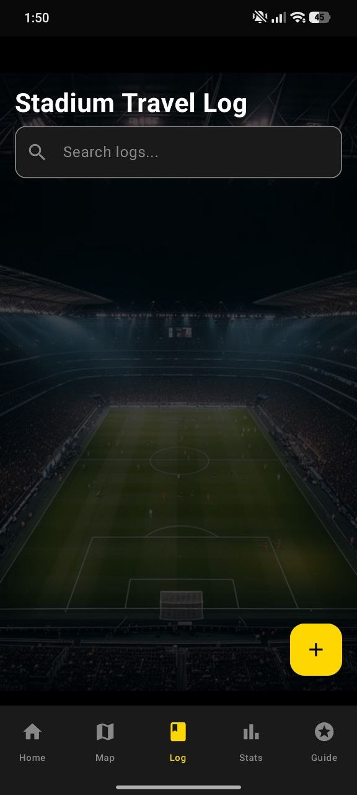
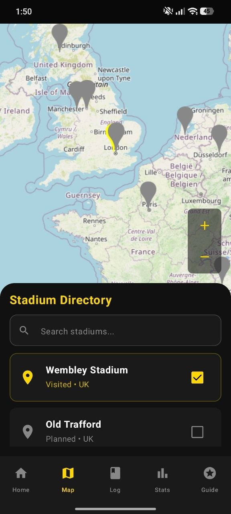
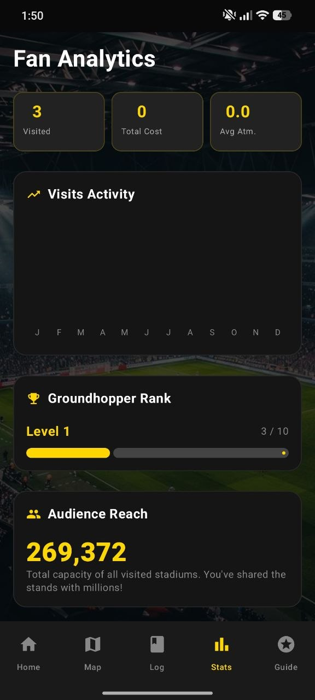
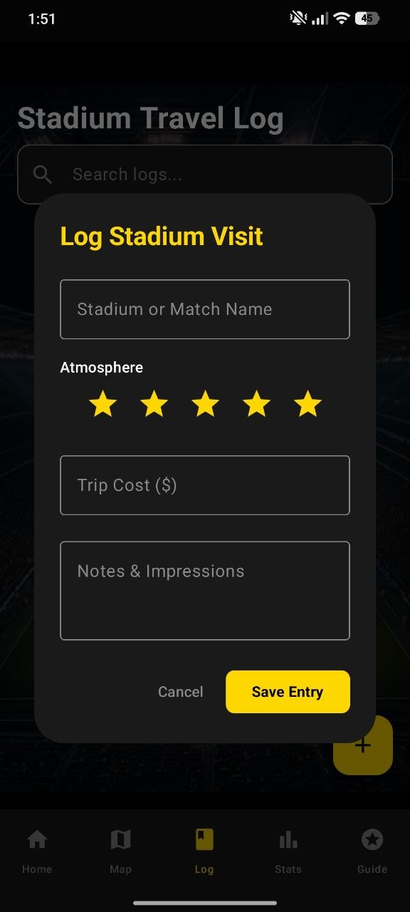
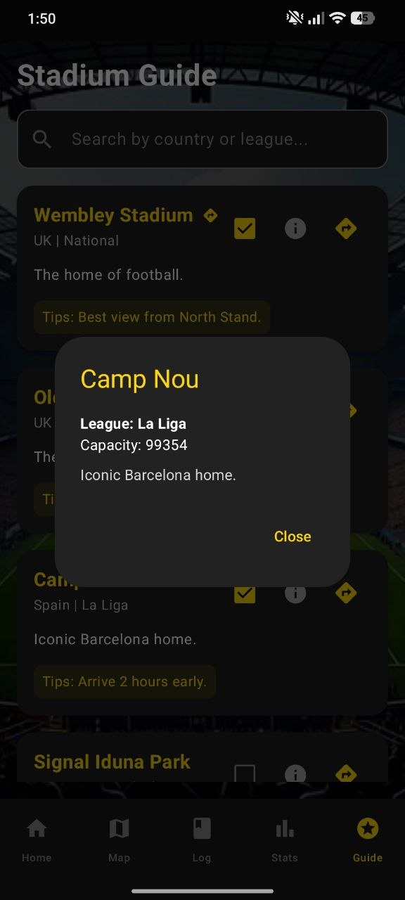
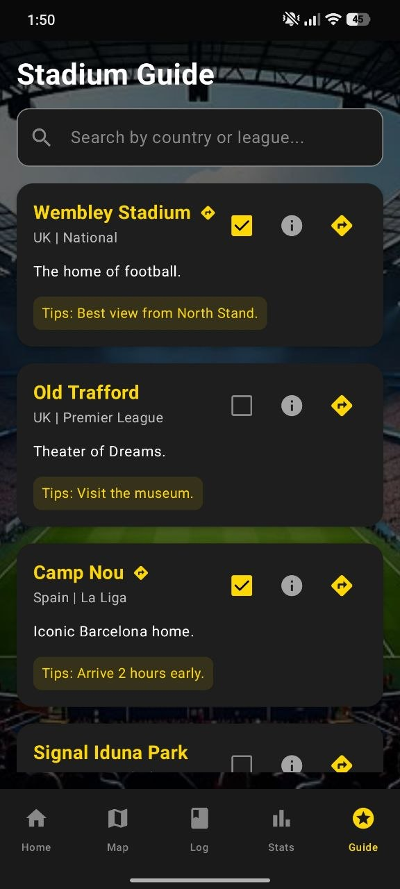
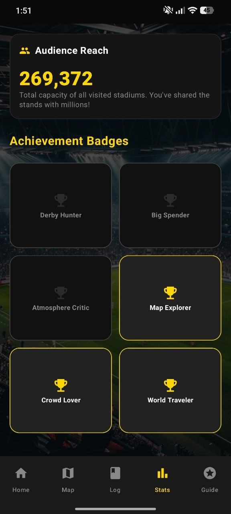

📍
Stadium directory
Discover iconic arenas, mark visited stadiums and keep your travel list clean.
Misil Stadium Tracker helps football travelers save visited arenas, log match trips, check stats, unlock badges and keep their stadium journey organized.

Designed for fans who collect stadium memories, match days and travel stories.
Discover iconic arenas, mark visited stadiums and keep your travel list clean.
Save stadium name, atmosphere rating, trip cost and your personal impressions.
Track visited stadiums, average atmosphere, audience reach and progress level.
Unlock fan milestones like Map Explorer, Crowd Lover and World Traveler.
Swipe-style animated carousel with app screens, glow, depth and smooth motion.







Whether you follow derbies, European nights or local stadium tours, Misil Stadium Tracker keeps every football trip organized.